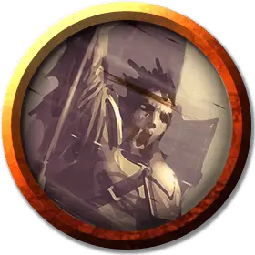

Ваятель камня
Stonemelder
Средний Гуманоид (Человек), нейтрально-злой

Класс Доспеха 17 (наборный доспех)
Хиты 75 (10к8 + 30)
Скорость 30 футов
| мод | спас | ||
|---|---|---|---|
| СИЛ | 15 | +2 | +2 |
| ЛОВ | 10 | +0 | +0 |
| ТЕЛ | 16 | +3 | +3 |
| мод | спас | ||
|---|---|---|---|
| ИНТ | 12 | +1 | +1 |
| МДР | 11 | +0 | +0 |
| ХАР | 17 | +3 | +3 |
Навыки Восприятие +2, Запугивание +5
Чувства пассивное Восприятие 12, чувство вибрации 30 футов
Языки Общий, Терран
Опасность 4 (1100 опыта)
Бонус мастерства +2
Особенности
Предсмертный взрыв. Когда ваятель камня умирает, он превращается в камень, после чего взрывается кучей осколков, осыпаясь дымящейся грудой щебня. Каждое существо в 10 футах от взрывающегося ваятеля должно совершить спасбросок Ловкости Сл 14. При провале существо получает дробящий урон 11 (2к10), а при успехе — половину этого урона.
Использование заклинаний. Ваятель камня является заклинателем 7-го уровня. Его базовой характеристикой является Харизма (Сл спасброска от заклинаний 13, +5 к атакам заклинаниями). Он знает следующие заклинания чародея:
• Заговоры (неограниченно): брызги кислоты [acid splash], защита от оружия [blade ward], свет [light], починка [mending], лепка земли [mold earth]
• 1 уровень (4 ячейки): поспешное отступление [expeditious retreat], псевдожизнь [false life], щит [shield]
• 2 уровень (3 ячейки): земляная хватка Максимилиана [maximilian's earthen grasp], дребезги [shatter]
• 3 уровень (3 ячейки): извержение земли [erupting earth], слияние с камнем [meld into stone]
• 4 уровень (1 ячейка): каменная кожа [stoneskin]
Действия
Жезл Чёрной Земли. Рукопашная атака оружием: +5 к попаданию, досягаемость 5 фт., одна цель. Попадание: дробящий урон 5 (1к6 + 2). Ваятель также может использовать ячейку заклинания, чтобы нанести дополнительный дробящий урон 2к8 за ячейку 1 уровня, плюс ещё 1к8 урона за каждый уровень ячейки выше 1.
Описание
Ваятели камня — это заклинатели, получившие свою силу напрямую от Огремоха. При помощи стихийной магии земли они защищают своё тело каменными панцирями. Ваятели камня составляют элиту войск культа и отчитываются напрямую перед его лидерами. Даже жрецы Чёрной Земли не могут отдавать им приказания.
Каждый ваятель камня вооружён особым предметом — жезлом Чёрной Земли. На первый взгляд жезл похож на обычную булаву, но в руках ваятелей камня он становится проводником для гнева Огремоха.